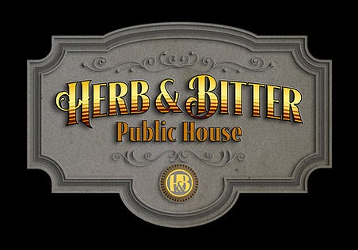
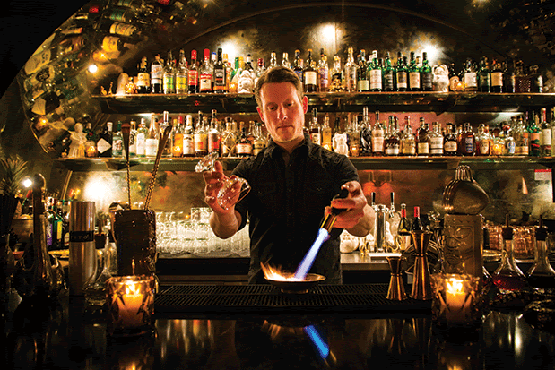
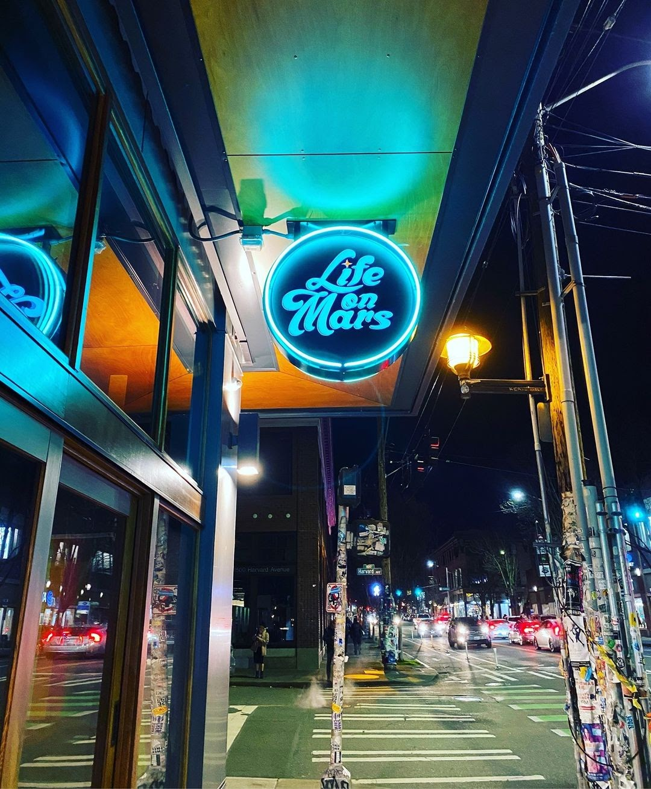

Bars in Capitol Hill
Classic and Upscale Bars
Herb & Bitter
Herb & Bitter is a moderately priced cocktail bar with a very traditional public house aesthetic. They offer a wide assortment of unique house cocktails, as well as some classics, but are most known for their well manicured herbal and bitter flights.
Foreign National
Foreign National is a speakeasy type bar located on E Pike St. The long lines can be off putting, but the ratings for this bar are through the roof. The dark atmosphere pairs nicely with the risque drink menu. Appetizers range from $5 curry puffs to $85 sturgeon caviar.
Life on Mars
Life on Mars is a great place that serves craft cocktails, vegan appetizers, and an impressive collection of vinyl records. Offering a unique experience to cocktail drinkers, the bartenders are constantly putting on various records.